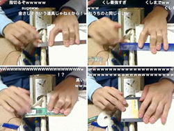
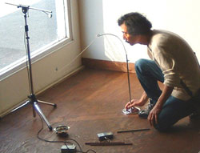
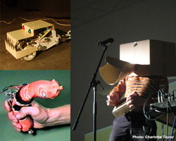
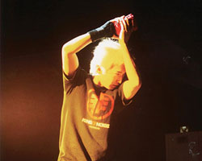
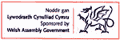
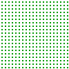

Upcoming Event
Dorkbot Dai Tokyo
A final match of DDT - THE Contests
Who will own the Tokyo ?! (in a sense of electricity?)
People doing strange things with electricity,
dorkbot TΩKYΩ invites CONTEST, now.
From 5 minutes free-presentation to unlimited open-contest?!
Let's WIN and LOSE with the spectacular night view of Dai Tokyo?!
6th(Sun), September, 2009
17:00 start
Venue:
23F, GranTokyo South Tower, RECRUIT South Hall
1 min walk from YAESU-MINAMI Exit of Tokyo station >>map
Admission free
Cosponsored by
DDTDDTDDTDDTDDTDDTDDTDDTDDTDDT
Call for CONTEST plans and participants
DDTDDTDDTDDTDDTDDTDDTDDTDDTDDT
dorkbot TΩKYΩ invites plans and participants of the CONTEST.
A requirement for contest plan: A few contact with electricity.
People who entry a contest could play anything
what she/he wants within 5 min.
Jury is the audience. Winner will be decided by votes.
Contest will be open in order of entries.
feel free to entry your plan and play!!
GGGGGGGGGGGGGGGGGGUEST PERFORMERS
RAZO
An instant major player = monosashi-st on nicovideo
A raid into minor event with a major!!
with un-majored scale, depth, and height!!
Don't miss a few cm dynamism!!
Movie@nicovideo >> http://www.nicovideo.jp/watch/sm5491555
MyList@nicovideo >> http://www.nicovideo.jp/mylist/6688434

Tatsunori Sakaide
Run a bar metamorphose from 1992
leads to the present without faith
Kaze Aoshi Dobeino Ueno Kusa Soyogu
sui sui

Paul Granjon
Paul Granjon was born in France in 1965. He currently lives in Cardiff, United Kingdom. He has worked as a professional artist since 1992, producing videos, installations and performances. He was one of the artists representing Wales in the Venice Biennale 2005. He is currently working on several collaborative projects with artists in Japan, the UK and Australia.
More details available at www.zprod.org

SAM2
The PDA noise artist.
Start his career as a noise unit "DoThankANull" under tokyo underground scene.
He also is actively performing as a solo performer "SAM2", an opening act of Shina Ringo tour, a pilot of battle machine performance group "KAIRAI-BUNCH", and a member of un-instrumental improvisational unit "TronOrchestra". He lives in China.
http://www.myspace.com/sam2jp

TTTTTTTTTTTTTTTTTTTTTTTTTTTTTTwitter Updates
TTTTTTTTTTTTTTTTTTTTTTTTTTTTTTTTTTTTTTTTTT
Cooperation:

|
|
Past Event
|
|

|
#special "dorkbot tourist" 2006.08.05/06
Dorkbot tokyo people who are doing strange things with electricity hijack the MOBIUM BUS and come over to Osaka ...more
|
|
|
#000004 2006.03.08
On March 8 2006, dorkbot tokyo has come back to the SuperDeluxe ! ...more
|
|
|
#000003 2005.12.17-18
People doing strange things with electricity
People doing strange things with software
People doing strange things with mountains ...more
|
|
|
#000002 2005.10.02
Dorkbot hour in bend++...photos
|
|
|
#000001 2005.05.12
The community "Dorkbot" of "people doing strange things with electricity" with whom 20 or more cities of the world are already infected landed also at this Tokyo at last on May 12(Thu), 2005. ...more
|
dorkbot about dorkbot and dorkbot-tokyo
archives previous events
mailing lists subscribe to dorkbot maling lists
contact contact us
| |
|